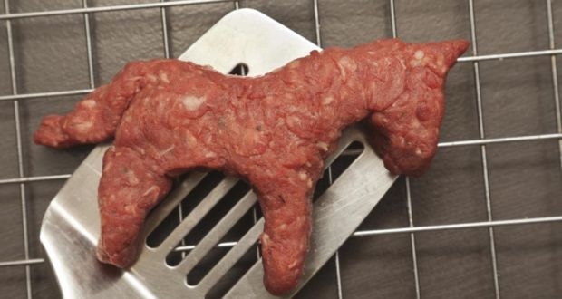

VEGAN DONKEY BURGER

Description: Does not contain real donkey, imitation only.
This is recipe was told to me by Guy Ferrari, when we were partying on Cape Hatteras.
Ingredients
You will need:
- Whole Foods brand Donkey Powder
- some twigs and string
- a bedpan
STEPS
- Gently chill the donkey parts.
- Crank up some Def Leppard
- Fix yourself a drink.
- Bon Appetite!